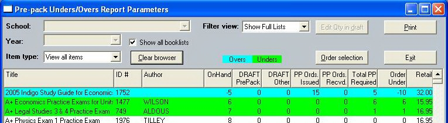

This window gives detailed insight into the ordering status of everything on your book-lists. If the window opens showing no items, click the List button.
Any combination of the listed items can be selected and placed into the draft purchase orders (using the Order Selection button).
If a selected line is showing quantities in the DRAFT PrePack column then the Edit Qty in draft button will be enabled.
The list can be filtered using the radio button group, and also by the combo-box (which can limit the view to Overs-only, Unders-only or only items which have a pre-pack order already drafted).

The figure in the OnHand column will vary in accord with the in-house method of calculating available stock (see Utilities\System Options, on the Titles tab).
The Print button gives a hard-copy of the information and closes the window.
Other Pre-Pack Reports